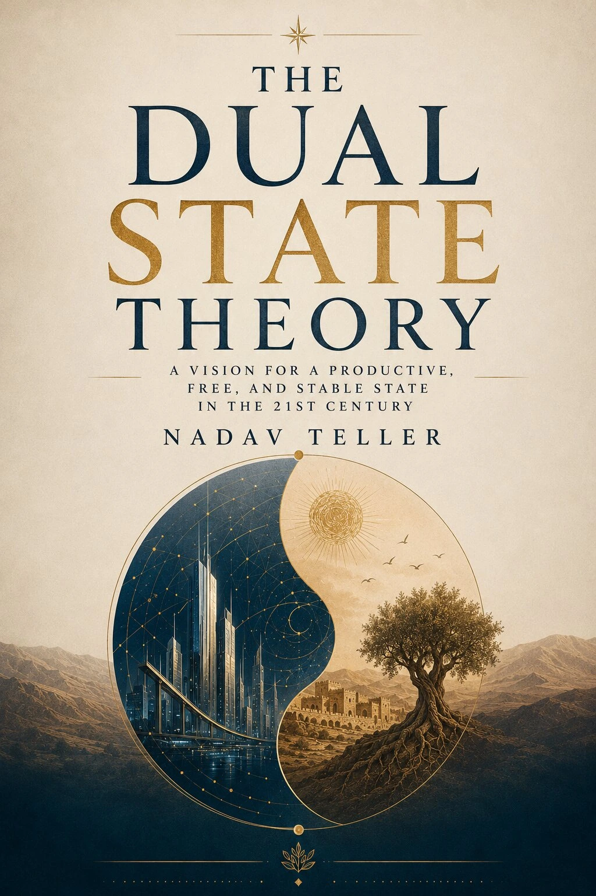

1
Why is a new state model needed?
Housing crises, capital concentration, middle-class erosion, political polarization, institutional distrust and the rise of AI show that the old structures are no longer enough.
Dual State Market Theory by Nadav Teller proposes a new political and economic route: understand why old state models are wearing out, what kind of model must be built, why a dual model fits the AI age — and why a bank–fund–production–capital engine can create a state that produces stability instead of only collecting taxes.

This page is built as a journey rather than an encyclopedia. The visitor moves from the historical problem to the economic engine, and then to the personal choice between the market track and the civic state track.
Housing crises, capital concentration, middle-class erosion, political polarization, institutional distrust and the rise of AI show that the old structures are no longer enough.
Not a centralized state and not an unrestrained market: a dual system where the free market continues to operate, while a stable civic track protects the basic conditions of life.
Because it does not erase one side. It preserves freedom, entrepreneurship and competition — while preventing total collapse when the market becomes too aggressive for the citizen.
The model creates an engine: dual bank → fund → productive corporation → infrastructure and housing → returning capital → reinvestment in citizens.
The individual can choose: a market track for full entrepreneurial freedom, or a civic state track for stability, training, housing and employment.
One of the core innovations of Dual State Market Theory is that the state does not force every person to live in the same economic and civic structure.
For entrepreneurs, creators, businesses and people who want to operate in a free market: compete, earn, fail, succeed and move flexibly. The state does not abolish the market — it preserves its space.
For people who need stability: accessible housing, employment, training, education, health and infrastructure. This is not the abolition of freedom; it is a civic floor that helps the person stand again.
The model emerges from the understanding that modern society is trapped between extremes: capitalism that creates growth but also concentration of power, and state centralization that creates security but can also create stagnation.
Even working people struggle to reach home ownership. In the dual model, housing is civic infrastructure, not only a speculative asset.
Automation will create abundance, but it will also replace roles. A system is needed that returns value to citizens, not only to capital owners.
Each extreme creates the next crisis: too much market creates instability; too much centralization creates stagnation.
Money flows into interest, speculation, debt and external corporations. The model builds a loop that returns capital into the system.
When citizens do not feel that the system works for them, they lose faith in the state. A new social contract is required.
That is why the model also connects to health, breath, witness consciousness and the ability to act with clarity.
This is the practical heart of the model. The state is not only a regulator and tax collector; it becomes a productive system that returns value to citizens.
Finances housing, infrastructure, industry, energy, AI and education through long-term systemic thinking.
Concentrates strategic capital and directs it toward projects that strengthen the state.
A productive national corporation: energy, construction, industry, agriculture, AI and infrastructure.
Profits do not simply disappear outward; they return to the national civic loop.
Housing, work, training, education and health strengthen the person and return them to creation.
Instead of falling again into the old battle between capitalism and socialism, Dual State Market Theory creates a structural synthesis: freedom is preserved, the civic floor is strengthened, and the state stops being merely a system that reacts to crises after they appear.
These ideas break the model into its main components: the historical pendulum, the bank, the capital loop, AI, the productive corporation, witness consciousness and the civilizational vision.
The entry point to the model and its two-track structure.
Why capitalism and socialism repeatedly swing between extremes.
How capital can remain inside a productive civic system.
Credit designed for stability, not only short-term profit.
Why artificial intelligence requires a new state structure.
A state that produces value, not only collects taxes.
The philosophical basis for seeing systems without being captured by ideology.
The larger vision of power, consciousness and civilization.
The diagrams show the model as a system: component wheel, historical need, civic system, balancing mechanism, districts and book cover.
No. The model does not abolish free markets, entrepreneurship or competition. It adds a stable civic track alongside the market so that the citizen is not thrown into total collapse when the market fails them.
Not in the ordinary sense. The model preserves entrepreneurship and free markets, but adds a dual bank, a fund, a productive national corporation and a civic floor to prevent excessive concentration and capital leakage.
AI can replace labor, concentrate capital and accelerate inequality. In the dual model, AI is integrated into civic infrastructure, industry, education, health and planning to serve public stability.
The model is not only economic. It assumes that a more stable person can build a more stable society. Body, breath, consciousness and the capacity to observe systems are part of the wider framework.
The English edition is available on Amazon under ASIN B0H24D5CMB. The Hebrew edition is available separately under ASIN B0H24NQLD6.
This page gives the first journey. The book deepens the model, the bot helps you ask questions, and the Israeli Merkava page is open to those who have already gone through the process and want to help assemble the parts.